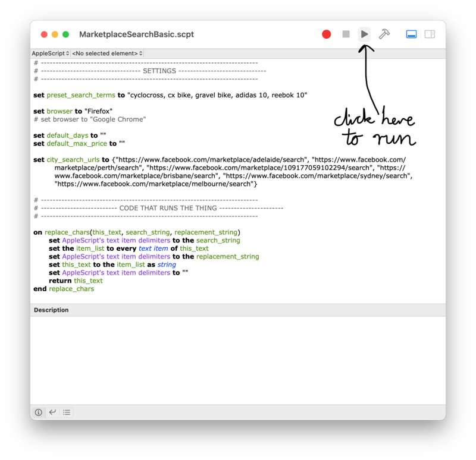

Automating Facebook Marketplace - searching multiple locations
Hey all, this is a script to use in Apple Script Editor (it's a program installed on every mac). Open that by typing 'Script Editor' into spotlight (Command+Space). Then copy the code below and paste it in. Save it and hit the Run button, and it'll guide you through a few questions before opening all the results!

There's also a few settings you can edit at the start of the script. These are the preset search terms (make sure you follow the same format), the browser to use (comment out the browser you don't want, by default I'm using Firefox but Chrome is there if you prefer it) and also the default number of days since the item was listed that you'd like to search. If you're not in Australia or would like to search more locations you'll need to edit the city_search_urls, by going to Facebook Marketplace and changing your location to the city you want to search in and copying that url into the city_search_urls list (again make sure to follow the same format).
Quick Tips to using
- Have the browser already opened (otherwise it gets confused and opens new windows not tabs)
- Do a Marketplace search beforehand and set your radius to 500km, so that subsequent searches are also for as big of a region as possible
- Sometimes it times out, not sure why. Just start again if it does and let me know if you figure out why
So usually I'd explain the code but I won't bother here because in my honest opinion, AppleScript is pretty average. I realised when I was getting quite close to finishing that on one of the docs that you can also write scripts for Apple products in JavaScript, which probably would be a lot easier if you were starting from scratch! Doh.
However if you're after something pretty similar to this, it's a good start.
The code is also available from GitHub.
# --------------------------------------------------------------------------
# ---------------------------------- SETTINGS ------------------------------
# --------------------------------------------------------------------------
set preset_search_terms to "cyclocross, cx bike, gravel bike, adidas 10, reebok 10"
set browser to "Firefox"
# set browser to "Google Chrome"
set default_days to ""
set default_max_price to ""
set city_search_urls to {"https://www.facebook.com/marketplace/adelaide/search", "https://www.facebook.com/marketplace/perth/search", "https://www.facebook.com/marketplace/109177059102294/search", "https://www.facebook.com/marketplace/brisbane/search", "https://www.facebook.com/marketplace/sydney/search", "https://www.facebook.com/marketplace/melbourne/search"}
# --------------------------------------------------------------------------
# -------------------------- CODE THAT RUNS THE THING ----------------------
# --------------------------------------------------------------------------
on replace_chars(this_text, search_string, replacement_string)
set AppleScript's text item delimiters to the search_string
set the item_list to every text item of this_text
set AppleScript's text item delimiters to the replacement_string
set this_text to the item_list as string
set AppleScript's text item delimiters to ""
return this_text
end replace_chars
set search_terms_input_string to display dialog "What do you want to search for?" default answer preset_search_terms
set search_terms_string to text returned of search_terms_input_string
set AppleScript's text item delimiters to ", "
set the search_terms_list to every text item of the search_terms_string
set AppleScript's text item delimiters to ""
set params to "?"
set max_price_input to display dialog "Whats the max price to search for (blank for no max)?" default answer default_max_price
set max_price to text returned of max_price_input
if (max_price) ≠ "" then set params to params & "maxPrice=" & max_price & "&"
set num_days_input to display dialog "How many days since posted do you want to check (blank for all dates)?" default answer default_days
set num_days to text returned of num_days_input
if (num_days) ≠ "" then set params to params & "daysSinceListed=" & num_days & "&"
with timeout of 3600 seconds
repeat with search_term in search_terms_list
set theDialogText to "Click Continue to proceed to the search for '" & search_term & "'"
with timeout of 3600 seconds
display dialog theDialogText buttons {"End", "Skip", "Continue"} default button "Continue" cancel button "End"
end timeout
repeat 1 times
if the button returned of the result is "Skip" then exit repeat
repeat with location_url in city_search_urls
set this_url to replace_chars(location_url & params & "query=" & search_term, " ", "%20")
tell application browser
activate
open location this_url
end tell
delay 0.1
end repeat
end repeat
end repeat
end timeout
with timeout of 3600 seconds
display alert "Searches complete"
end timeoutHope that helps your Facebook Marketplace search needs! Also once Facebook blocked me from seeing search results as I ran too many searches too quickly, so use with care!